Pour ce projet, nous devions développer un clone 3D du jeu Asteroid et produire un rapport sous forme d'un site web. Asteroids est un jeu vidéo de type shoot 'em up édité par Atari Inc. en 1979 sur borne d'arcade. Le jeu a connu un important succès aux États-Unis et au Japon, et demeure considéré comme un classique de l'histoire du jeu vidéo.
Mon jeu comporte plusieurs niveaux, 10 pour être exact, chacun de ses niveaux ayant des originalités. Une fois tous les ennemis d'un niveau détruis, on passe au niveau suivant.
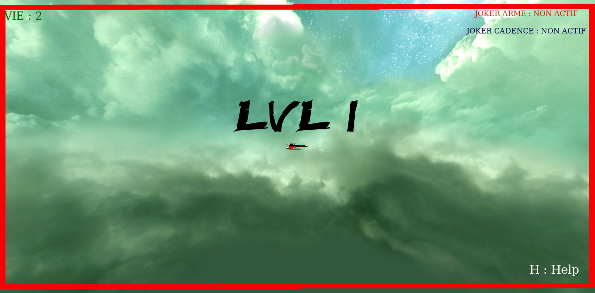Une fois tous les niveaux parcouru et terminé, nous avons la possibilité de retourné à l'écran titre et de recommencé.
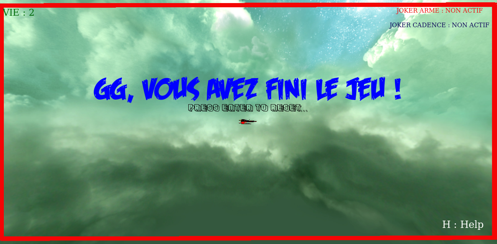Cette bibliothèque nous à été imposé, elle permet de crée un scene 3D en js et d'y ajouter/animer des objet 3D.
Three.jsCette API, basée sur Three.js, est dédiée au jeu vidéo. Dans mon cas, les fonctions que j'ai utilisé sont THREEx.Fullscreen, THREEx.WindowResize et THREEx.screenshot permettant respectivement l’affichage en plein écran, d’adapter dynamiquement la taille de la fenêtre et la capture d’écran.
Threex.jsCette API m'a permis de géré les touche clavier. Je l'ai choisi car plutôt que la manière classique,elle permet de gérer le fait de rester appuyer sur une touche, relâché la touche, etc.
Keydrow.jsCet API permet une meilleure gestion des musiques, notamment grace aux méthode "fades in", "fade out" qui permet une transition douce.
Howler.jsMon projet respecte l'arborescence de fichiers comme spécifié dans le cahier des charges :
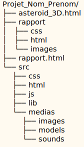Tout d'abord, j'était partie dans l'idée d'écrire tout mon code de manière impérative. Mais au fil du temps, il était de plus en plus difficile de s'y retrouvé , donc j'ai décidé d'organisé mon code comme si le paradigme de programmation était Orienté Objet. Plusieurs source ont été utile pour m'aider dans cette tache :
Le fichier "enterPoint.js" est le point d'entrée du programme. il instancie un Main() et démarre la boucle "GameLoop" qui lance les animations.
Le fichier "Main.js" est considéré comme ma "classe principale". C'est depuis cette classe que tous mes objets son load et que toutes les autres "classes" sont instanciés. Cette classe hérite de THREE.Scene, ce qui me permet de gérer plus facilement les objets de ma scène (déplacement, intégration etc.). Lécriture de "this" est donc, avec cette méthode, équivalent à l'écriture de "this" d'un "THREE.Scene".
Les autres fichiers, à savoir "interface.js" et "son.js" me permettent de géré, depuis le main, les différents affichages et les différents sons du jeu.
Pour les objets "principaux", les plus visibles, il sagit d'objet 3D au format dae importé sur la scène. Le reste, les tirs, les jokers etc. il s'agit d'objet produit directement grâce à Three.js.
Afin de représenté les bordures du plateau de jeu, j'ai fait le choix de positionné des cylindre rouge chargé grâce à Three.js, de façon à ce que les bordure du jeu soit visible par le joueur. C'est très untile, surtout pour la caméra centré sur le joueur et la caméra fps.
Chaque texte affiché à l'écran, le niveau, les bonus actifs, le nombre de vies, l'accueil etc. utilise une police d'écriture personnalisée. Toutes ses différentes polices ont été téléchargé à l'adresse suivante : police.
La taille de la fenêtre est, comme demandé, adaptative. Les différentes informations affichées durant une partie sont insérées grâce à du HTML et du CSS, en complément du Javascript.
Une Skybox a été placée sur la scène. Il s'agit d'un cube, dont les faces intérieures ont été recouverte par des images.
Comme demandé, au moins deux positions caméra sont disponibles. La première, celle de base, est fixe et nous voyons ainsi le plateau de jeu et les différents objets la composant. Une seconde caméra est cette fois-ci fixe par rapport au vasseau et suit les mouvements de celui-ci.
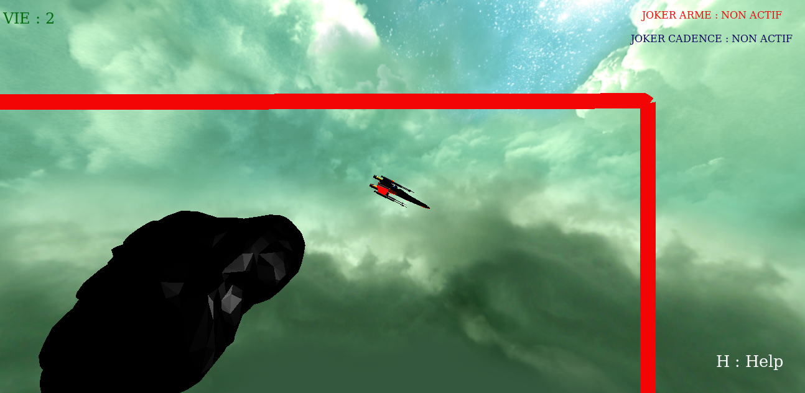J'ai essayer d'intégré une troisième caméra, une vue FPS (First Personne Shooter), sans succès.Le code est encore disponible en commentaire de mon main.js.
Le joueur a à sa disponibilité un panel de touche lui permettant d'intérargir avec les objets de la scene. La liste des touches disponnible (sauf triche), sont disponible à n'importe quel moment du jeu en appuyant sur H. Faire H à l'écran titre du jeu eest plus recommandé que de le faire durant une partie, l'écran d'acceuil se cachera alors permettant de mieux prendre connaissance des différentes touches. Des touches de triche, non affiché avec H, sont aussi disponible. Il sagit des touches J (joker suivant), K(détrure tout les ennemis) et I (invincible, vie en illimité).
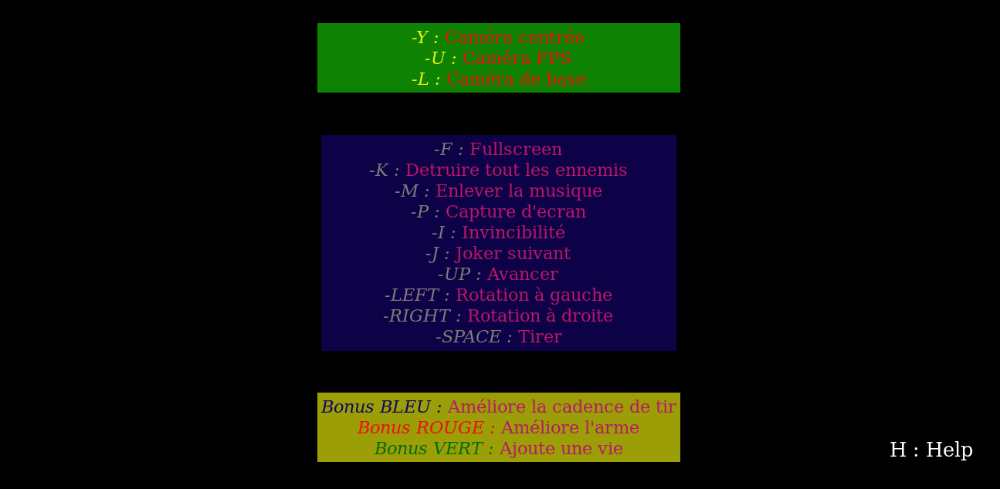Pour passé les différents écran du jeu, comme l'écran titre ou l'affichage d'un niveau, le joueur doit appuyer sur ENTER.
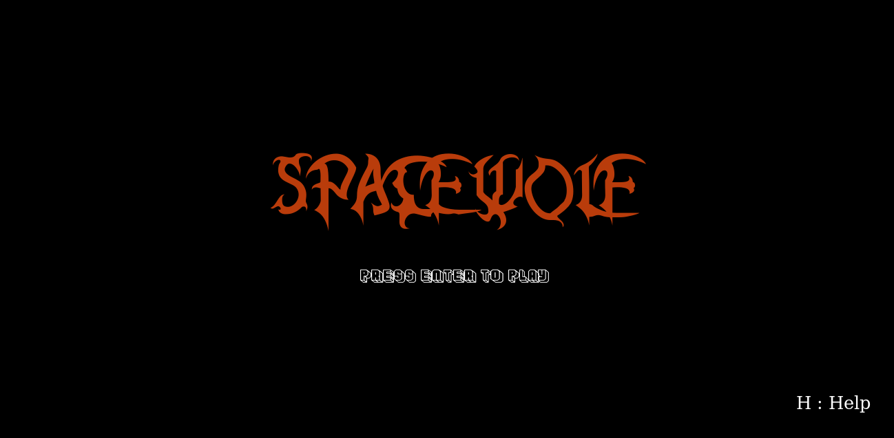
Durant une partie, le joueur auras la possibilité de ramassé certain objet, qui lui
donneront certains bonus. Ces objets ont tous une chance de "tomber" des ennemis lors de leur
destruction.
Il existe 3 jokers:
Au départ, j'étais partie dans l'idée de réaliser un principe de collision avec des Hitbox. Mais n'ayant pas réussi, je me contente d'utiliser la méthode "distanceTo()" de Object3D() de THREE.js. Cette méthode permet de comparer la distance d'un objet avec un autre, et ainsi de pouvoir déterminé quand un objet est assé près d'un autre pour qu'ils soit considéré comme en contact.
Des musiques sont présentes à certains moments clés du jeu. Lors de l'écran d'accueil,
lors de l'écran de GameOver et durant une partie, la musique principale (tirée du jeu
Airwolf 2 sortie sur Commodore 64, Amstrad CPC et ZX Spectrum en 1987) tourne en boucle.
Toute les musiques du jeu son désactivable et réactivable avec la touche M.
Des effets sonores sont présent afin de marqué chaque évènement (collision, tir, avancement du vaisseau, mort du vaisseau, joker ramassé etc.).
Au début du jeu, le joueur dispose de 3 vie, si il meurt 2 fois sans ramassé de joker vie, la
partie se termine et l'écran de game over est affiché.
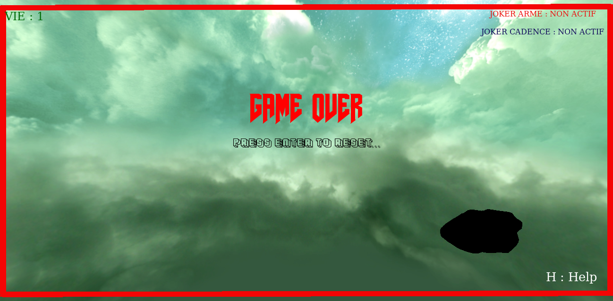
Le joueur progresse dans un cadre qui détermine la zone de jeu. Si un objet traverse
un des bords du cadre, il se repositionne automatiquement de l'autre côté de celui-ci.
Le joueur, pour finir le jeu, doit détruire tout les ennemis composant chaque niveau du jeu
(10 niveau au total).
Le nombre d'ennemi ainsi que leurs vitesses dépend du niveau actuel.
On icarne dans ce jeu un X-WING réalisé avec Blender puis exporté au format DAE:
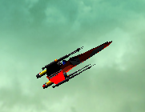
Pendant certaines périodes clés (commencement d'un nouveau niveau, réaparition au centre du plateau
après la perte d'une vie), le joueur est intuable pendant 3 seconde, un effet de clignotement viens
souligné cet état d'invinciblité. Le joueur peut alors, durant cette période, traversé les ennemis
sans effet.
Il existe plusieurs sortent d'ennemi dans le jeu :
Un HUD (Head up display) est présent et donne des informations essentiel au joueur pour le
bon déroulement d'une partie.
Le nombre de vie dont dispose le joueur :
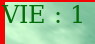
Les joker actifs du niveau :
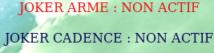
Un joker perd son activité de niveau en niveau, afin de ne pas rendre les choses trop
facile. La touche J permet de les tester.
| Features | Implémentation |
|---|---|
| Rotation astre | |
| Puissance fusée/Explosion | 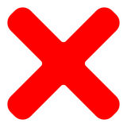 |
| Transition lvl et game over | |
| Touche H (aide de jeu) | |
| Menu de jeu | |
| Camera de base & camera secondaire | |
| Toute sorte de collision | |
| Mouvement des astre par rapport aux autres | |
| Mouvement de base du vaisseau | |
| Inertie du vaisseau | |
| Missile qui se détruise au dela d'une distance | |
| Niveau de plus en plus dur | |
| Ennemi intelligent (déplacement, tir) | |
| Effet sonore | |
| Musique ambiante (désactivable) | |
| Interface de dev Dat.GUI | |
| Différents jokers | |
| Triche (I, J, K) | |
| Décord 3D (skybox) | |
| Post-processing |